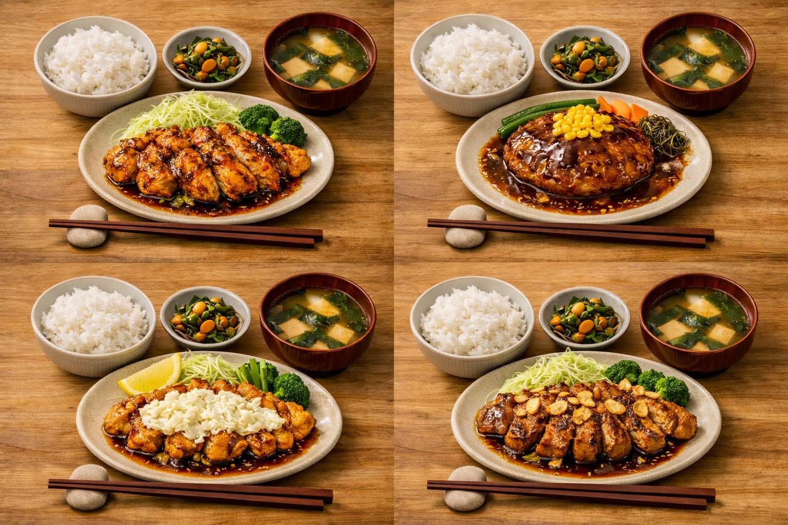
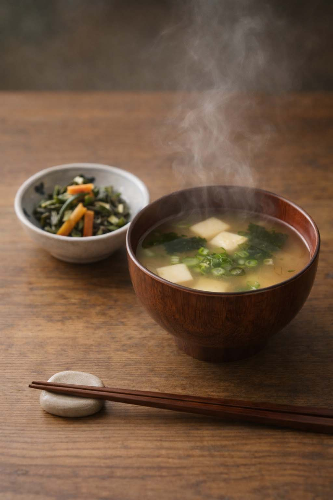

メニュー

焼き鮭定食
脂ののった鮭を、ふっくらと丁寧に焼き上げました。
やさしい塩味がごはんによく合う、ほのか食堂の定番の一皿です。
¥1,100

日替わり定食
- 月曜日 照り焼きチキン
- 火曜日 ハンバーグ
- 水曜日 豚の味噌焼き
- 木曜日 チキン南蛮
- 金曜日 牛肉ステーキ
その日の献立に合わせて、やさしい味に仕上げています。
小鉢と味噌汁がついた、ほのか食堂の人気の定食です。
¥1,100
小鉢・味噌汁について
小鉢は日替わりで、煮物やおひたしなどをご用意しています。
味噌汁は、昆布と鰹のだしを使ったやさしい味です。
